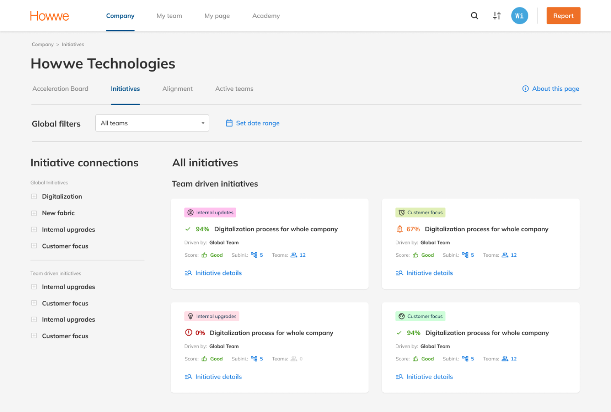
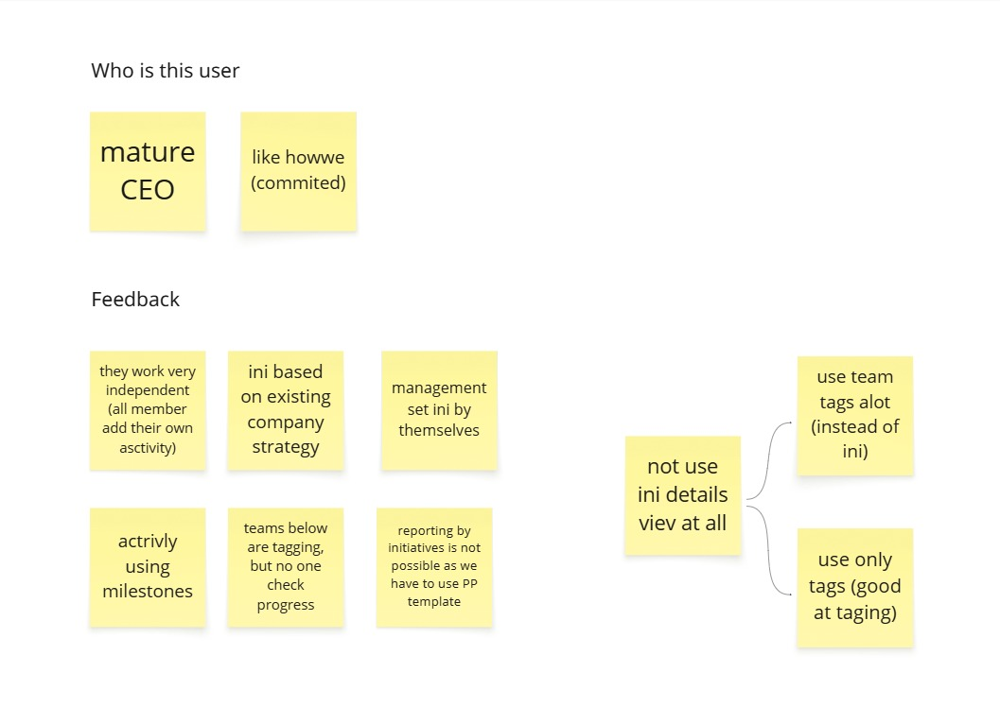
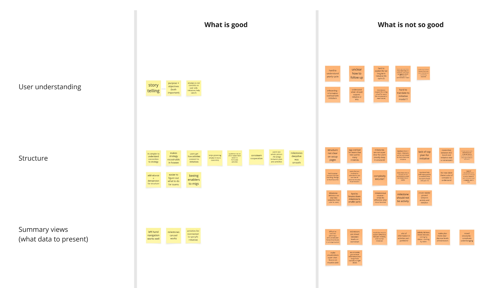
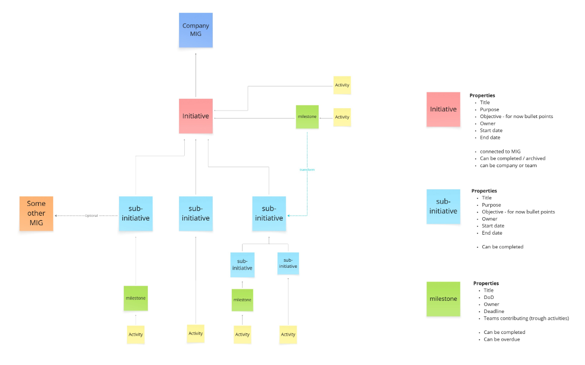
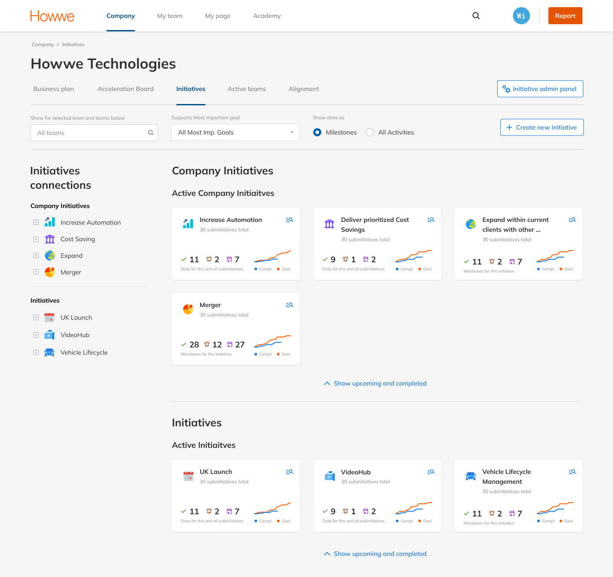
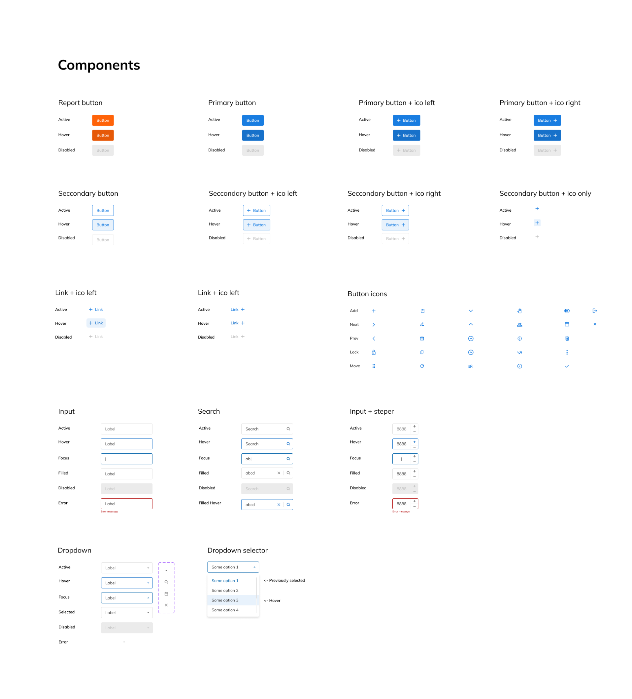
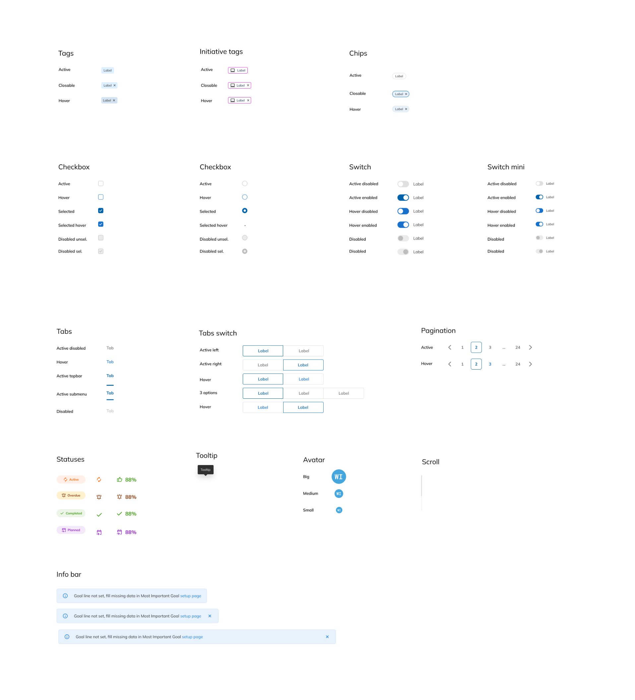

Design system · The platform the AI runs on · 2023-24
Built the
Foundation.
Then Rebuilt
the Core.
The Problem
The platform had no core. Company goals, team execution and individual daily work lived in separate places with nothing connecting them. Underneath, there was no design system either - the product had been built by engineers, with Ant Design components under layers of custom overrides. Every change was expensive, and nothing was consistent enough to change safely.
The Decision
I built the foundation before the feature. Redesigning without a system would mean redesigning again in six months, and every new capability would be slower to ship and harder to QA. That order mattered more than I expected: when the core module turned out to be built on a wrong assumption, rebuilding it was affordable instead of fatal.
Tested, then rebuilt from the model up
Initiatives
The Initiatives module became the structural backbone of the platform - the thing that connects a company goal to a team's execution to one person's Monday morning. I designed it from scratch, validated it with real clients, and then rebuilt it on the evidence.
The hypothesis
Howwe sells a method for executing strategy - the platform is how it reaches the client, so the object model is the methodology made operable. V1 came from the methodology, from leadership's direction, and from what customer success heard in accounts every day. All three said the same thing - give teams ownership and engagement follows.
- Teams propose and shape their own initiatives, bottom-up
- Initiatives sit beside each other rather than under a company goal
- The detail view is built for contribution, not for steering
- Ownership sits with a team, not with a person

Where it broke
I designed and ran the interviews. Usability held up - people understood the interface. The model underneath didn't, and it came back the same way from mature, committed customers, not from accounts struggling with the product. The finding contradicted the methodology, leadership's direction and customer success at once.
- Management set the initiatives themselves. The bottom-up premise failed at the top, not at the edges
- The initiative detail view went unused. The surface built for collaboration wasn't where the work happened
- Teams below were tagging; nobody above was reading it. Engagement existed and produced nothing

It tested well on usability. Nobody got lost, nobody misread the interface. Three sources of internal truth agreed with each other, and the evidence disagreed with all three.
A retro on my own work
I facilitated a retro on the module I had just designed, with the people who sell it, support it and use it. The ratio in the room was the finding: twelve notes under what works, forty-five under what doesn't - and not one of them was about how it looked.
- hard to translate to initiative model
- complexity MIG / INIT
- milestone should not be activity
- structure not clear on setup pages
- onboarding information overload with initiatives

Back to the model
So I stopped redrawing screens and went back to the object model: what an initiative is, what sits underneath it, who owns each level, what can be completed and what can only be tracked. Nine structures were drawn and rejected. The call on which one shipped was mine, made on what the interviews returned and what leadership and customer success were seeing from their side.
- Structure runs top down now - a company goal, then an initiative, then sub-initiatives, milestones and the activities underneath
- Every level has one person responsible for it, by name - not a team, not whoever picks it up
- A sub-initiative used to belong to a team; now it belongs to a person - which is where leadership and customer success had landed too
- Nothing about how the product looked changed. What changed was what it's made of

What shipped
V2 gives management and teams the half each of them actually asked for: structure comes from above, delivery is owned below.
- Every initiative hangs off a company goal - hierarchy is enforced, not implied
- Sub-initiatives have a named individual accountable for them
- Milestones carry progress; activities sit underneath
- Teams engage at execution level, not at definition

Why the rebuild was affordable
The Design
System
None of that would have been possible on what I inherited. Before the core module existed, I built the system it would stand on - the component library, the visual language, and the information architecture that made the platform legible in the first place.
It isn't work that demos well. A design system doesn't appear on a roadmap as a feature, and this one had to be built alongside a product that kept shipping rather than during a freeze. But it's the difference between a platform where every change is argued from scratch and one where change has a predictable cost - which is why, later, rebuilding the core module was a scoped job instead of a rewrite.
What I inherited
A platform built by engineers: Ant Design components under layers of custom overrides, no documentation, no consistent visual language. Buttons had several styles. It wasn't always clear what was interactive and what wasn't.
- Fixed sidebar eating ~130px - at 1280px that's 10% of horizontal space gone before content starts
- Flat navigation with no role signal: Company, Why, Teams, My Reports in one undifferentiated list
- Hierarchy implied, never shown

What I built
A component library specified in states rather than in resting form, built on semantic tokens rather than raw values - so a state or a status is a token, not a redrawn element. Design and frontend ended up working from the same vocabulary, which is what made handover fast and review objective. Alongside it, a role-based information architecture that mirrors how the organisation is actually structured.
- Buttons, inputs, dropdowns, tabs, tags, switches, statuses - each specified with active, hover, focus, filled, disabled and error
- Tokens for colour, spacing and type, named by role rather than by value
- A type scale tied to roles
- Company / Team / My Page maps to the org, so your context is always visible - and full horizontal width is recovered
- QA against the frontend build became a check against the system, not a subjective review


Summary
Outcome
Initiatives became the platform's core, and the company repositioned the product around it. Design system, platform redesign and Initiatives V2 all shipped and stayed in active use through the end of my tenure. The pivot from V1 to V2 wasn't a failure - it was a hypothesis tested, disproved and acted on.
How I validated
Interviews I designed and ran with real customers. A retro I facilitated on my own module, with the people who sell it and support it. Structured review with leadership and customer success. Quarterly NPS tracked upward through the redesign, dipped once after V1 launched, and recovered after the pivot.
What I learned
You don't win an argument about human behaviour with an opinion. I flagged the adoption risk early and it changed nothing; what changed the product was putting V1 in front of real organisations and letting the evidence speak. Doing it again, I'd get to that evidence sooner, with something smaller to test. I'd also add comments and change history inside Initiatives - async communication would have made the module sticky in a way structure alone couldn't.
I've never minded being wrong about a product. I mind finding out late, from someone who quietly stopped using the thing I built.